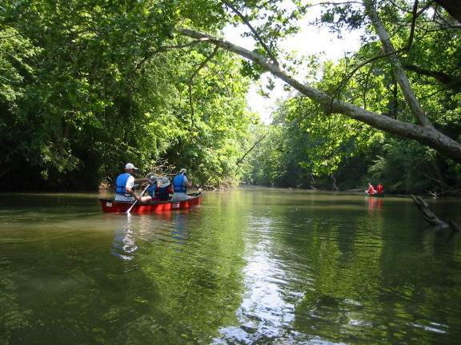
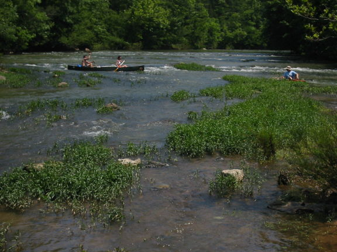
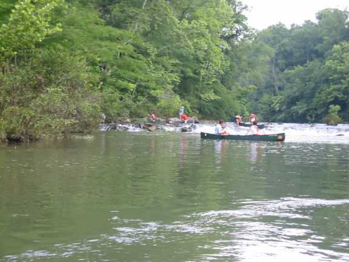

|  | Little Cahaba River Upper Section, close
to the Put In
(photo courtesy Andreas Gayde) |
|  | Little Cahaba River Upper Section, one
of the shoals before the first "big" (2ft) drop
(photo courtesy Andreas Gayde) |
|  | Little Cahaba River Upper Section, the
3ft drop.
(photo courtesy Andreas Gayde) |